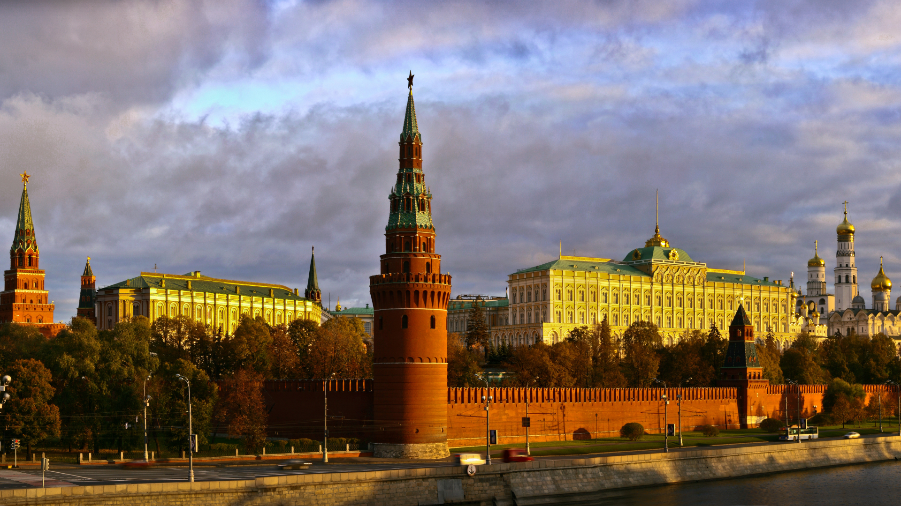
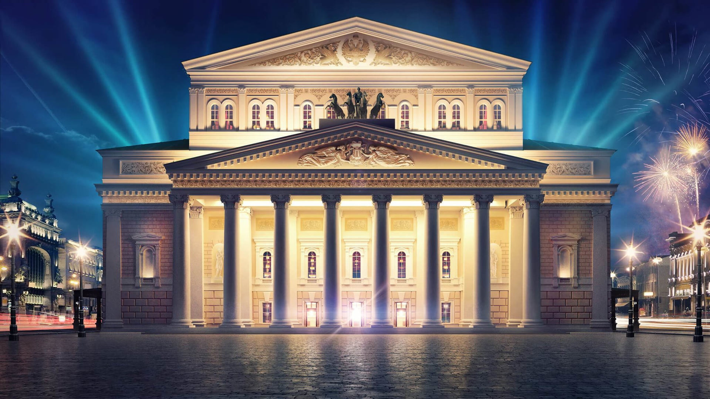
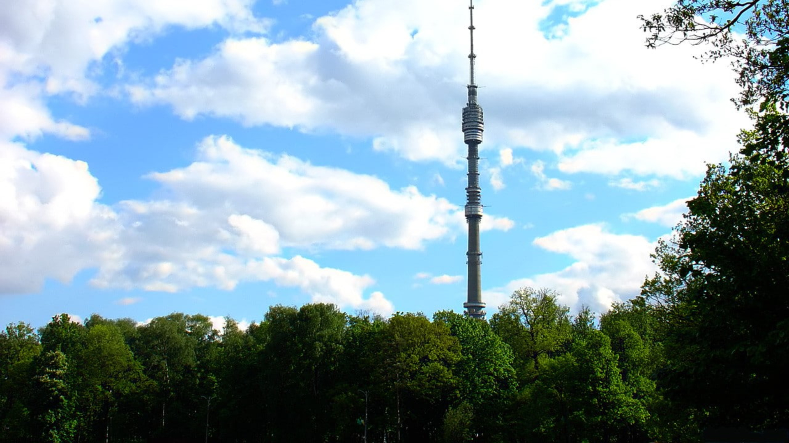

Moscu
Kremlin
El Kremlin es un complejo fortificado ubicado en el corazón de Moscú, Rusia. Es uno de los lugares más emblemáticos y visitados de Rusia, que alberga importantes edificios gubernamentales, históricos y religiosos.
El Kremlin ha sido el centro del poder político y religioso de Rusia desde hace más de 500 años, y ha sido el hogar de numerosos líderes, incluidos los zares, los comunistas y los presidentes de la Federación Rusa.
Dentro del Kremlin se encuentran la Catedral de la Anunciación, la Catedral del Arcángel Miguel y la Catedral de la Asunción, todas ellas joyas de la arquitectura religiosa rusa. También se pueden encontrar varios museos y galerías de arte que contienen obras de arte y artefactos históricos importantes.
El Kremlin es una visita obligada para cualquier persona que visite Moscú, y ofrece una vista única y fascinante de la historia, la cultura y la política de Rusia.
Catedral de San Basilio

La Catedral de San Basilio, también conocida como la Catedral de la Intercesión de la Santísima Virgen en el Foso, es una de las iglesias más famosas y fotografiadas de Rusia. Situada en la Plaza Roja de Moscú, la catedral fue construida en el siglo XVI por orden de Iván el Terrible.
La Catedral de San Basilio es conocida por sus torres y cúpulas de colores brillantes, y su arquitectura única, que combina elementos de las iglesias ortodoxas rusas y de la arquitectura islámica. En su interior, se pueden encontrar numerosas capillas y santuarios, así como también valiosas obras de arte y tesoros religiosos.
La Catedral de San Basilio es una atracción turística imperdible para aquellos que visitan Moscú, y su belleza y riqueza histórica la convierten en una de las iglesias más importantes de Rusia y del mundo.
Teatro Bolshoi
El Teatro Bolshoi es uno de los teatros más famosos y prestigiosos de Rusia y del mundo. Ubicado en el centro de Moscú, el teatro fue fundado en 1776 y se ha convertido en un importante símbolo de la cultura rusa.
El Teatro es famoso por sus producciones de ópera y ballet, que se presentan en su escenario de clase mundial. Además, el teatro cuenta con una impresionante colección de trajes y decorados históricos que se utilizan en sus producciones.
El Teatro Bolshoi ha acogido a muchos de los artistas más famosos de Rusia y del mundo, y sus producciones son aclamadas por su alta calidad y por el espectacular talento de sus bailarines y cantantes.
Visitar el Teatro Bolshoi es una experiencia única para cualquier amante de la ópera y el ballet, y es una visita obligada para aquellos que quieren sumergirse en la rica cultura rusa.
Torre Ostankino
La Torre Ostankino es una torre de telecomunicaciones ubicada en Moscú, Rusia. Con una altura de 540 metros, es una de las torres más altas del mundo y la estructura más alta de Europa. Fue construida en 1967 y desde entonces ha sido un símbolo icónico de Moscú.
La Torre Ostankino se utiliza para transmitir televisión y radio, así como para comunicaciones de telefonía móvil y satelitales. También cuenta con una plataforma de observación abierta al público, desde la que se puede disfrutar de impresionantes vistas panorámicas de Moscú.
Visitar la Torre Ostankino es una experiencia única y emocionante, y es una de las principales atracciones turísticas de Moscú. La torre es un ejemplo impresionante de la ingeniería y la tecnología modernas, y es un recordatorio del papel crucial que juegan las comunicaciones en nuestra vida cotidiana.